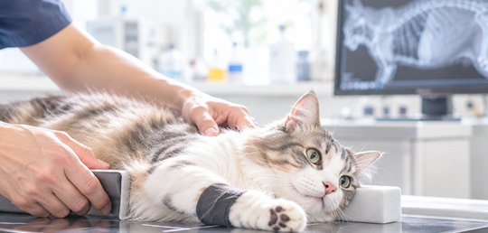
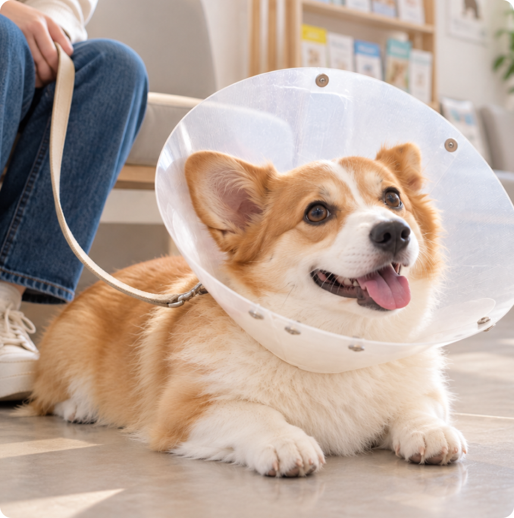

000-123-4567
（受付時間 9:00–19:00）
Medical Services
そらいろ動物病院では、予防から治療まで幅広く対応しています。ご不明な点は、診察の際にお気軽にお尋ねください。
vaccination
犬・猫の混合ワクチン、狂犬病予防注射、フィラリア予防、ノミ・ダニ予防を行っています。
生活環境や年齢によって必要な予防は変わります。室内飼いか外に出るか、他の動物と接する機会があるかなど、お話を伺ったうえでご提案します。
ご案内
狂犬病予防注射は法律で年1回の接種が定められています。当院で接種証明書を発行いたします。
General Clinical
食欲がない、元気がない、下痢をしている、皮膚を痒がっている。こうした日常の不調から、慢性疾患の管理まで対応しています。 血液検査、レントゲン、超音波検査などを行い、結果は画像や数値をお見せしながらご説明します。治療の選択肢が複数ある場合は、それぞれの方針をお伝えしたうえで、ご相談して決めていきます。
health check
気づいたときには進行している、ということも少なくありません。 年齢や体質に合わせて検査項目をご提案します。
7歳を超えたら年2回の受診をおすすめしています。
ベーシック
身体検査・血液検査

スタンダード
ベーシック＋レントゲン
フル
スタンダード＋超音波検査
ご案内
検査結果は後日、冊子にまとめてお渡しします。前回の結果と比べられるよう記録を残していますので、変化を追うことができます
surgery
去勢・避妊手術をはじめ、腫瘤の切除、外傷の処置などに対応しています。
手術前には血液検査を行い、麻酔に耐えられる状態かを確認します。手術当日は麻酔の管理を専任のスタッフが担当し、術中の状態を継続して確認しています。
ご案内
手術内容や費用、術後の経過については、事前の診察で詳しくご説明します。 ご納得いただいたうえで日程を決めますので、疑問はその場でお尋ねください。

© 2026 そらいろ動物病院